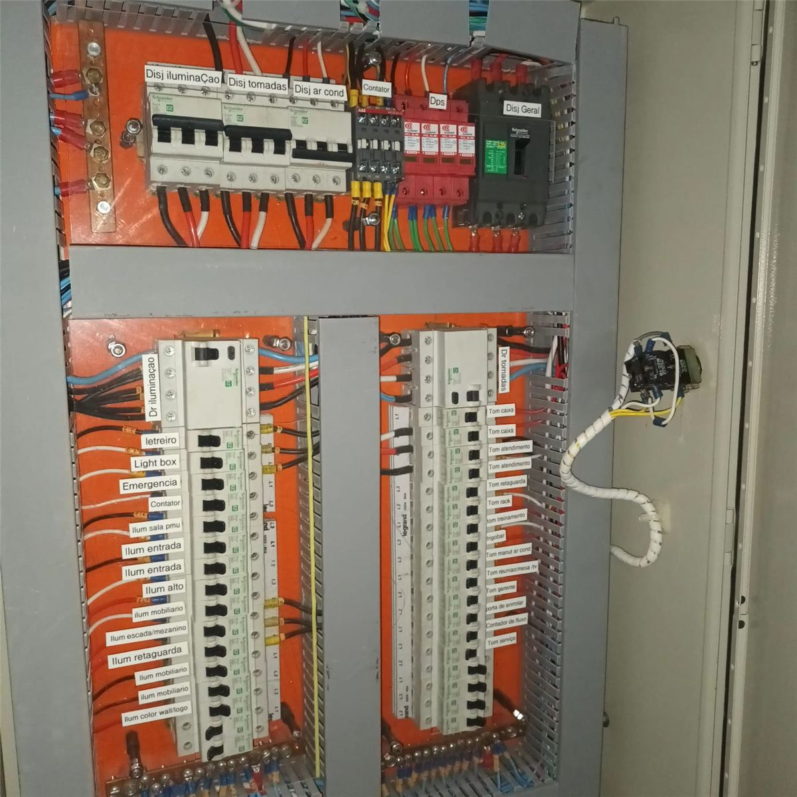
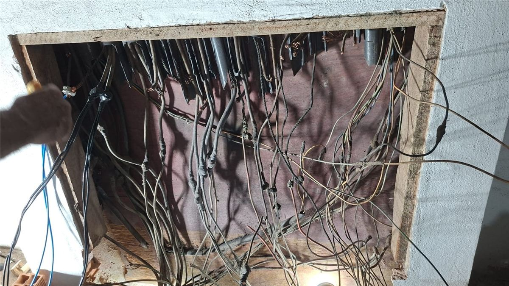
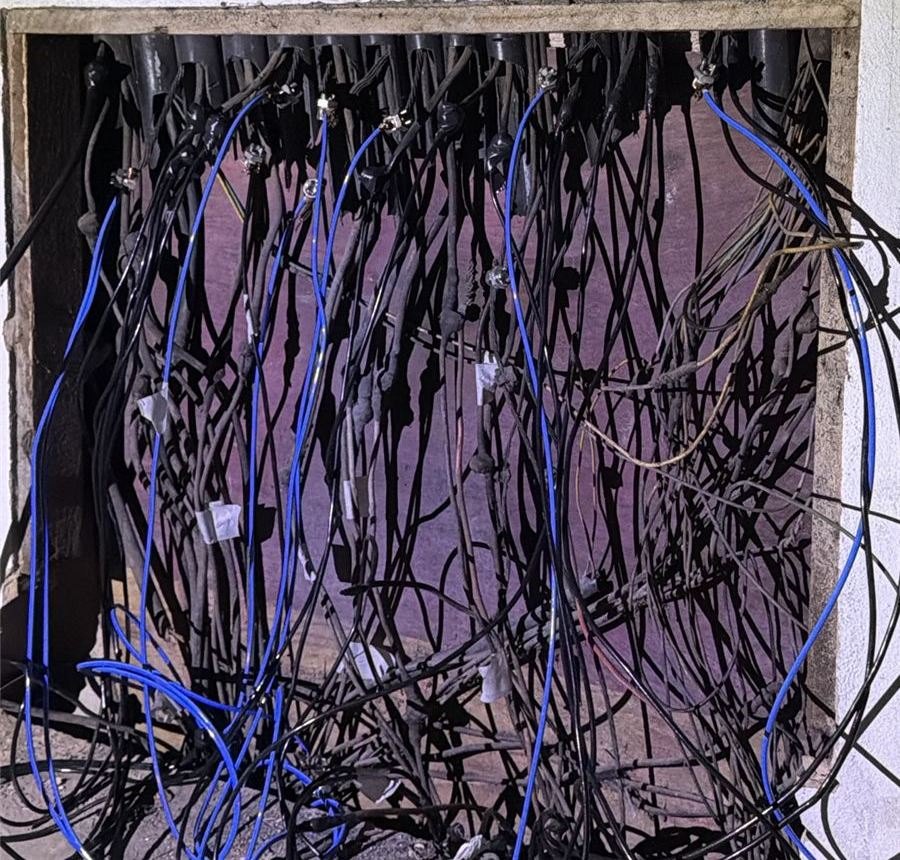

Eletricista 24 horas em Vitória
Sem energia, curto-circuito, disjuntor que desarma ou cheiro de queimado. Explique a situação e a gente diz como e quando atende.
- Atendimento todos os dias, inclusive feriados
- Valor informado antes do serviço
- Técnico com registro no CRT

Enquanto a equipe não chega
- Se houver cheiro de queimado, faísca ou fumaça, desligue o disjuntor geral.
- Não toque em fios expostos nem em equipamentos molhados.
- Afaste crianças e animais do local.
- Ao chamar, diga o endereço e o que aconteceu. Se puder, mande uma foto do quadro.
Situações que atendemos
- Sem energia no imóvel todo ou em parte dele
- Disjuntor que desarma toda hora
- Curto-circuito e cheiro de queimado
- Tomadas, chuveiro e interruptores queimados
- Quadro elétrico esquentando
- Falta de energia em condomínio, loja ou empresa
Furto de cabos à noite: energia de volta em 4 horas
Depois de um furto e corte de cabos, um condomínio de Vitória ficou sem energia. À noite, a equipe identificou os cabos, rastreou cada circuito e refez as ligações. A energia do edifício voltou em 4 horas.
- Ocorrência
- Furto e corte de cabos
- Atendimento
- Noturno, no mesmo dia
- Resultado
- Energia restabelecida em 4 horas
O condomínio não é identificado, por privacidade.


Saímos do Itararé
Chegamos mais rápido aos bairros vizinhos e atendemos toda Vitória, além de Vila Velha e Serra.
- Itararé
- Santos Dumont
- Santo André
- São Pedro
- Joana d’Arc
- Bonfim
- Maruípe
- Santa Cecília
- Jesus de Nazareth
- Gurigica
- Consolação
- Romão
- São Cristóvão
- Jardim da Penha
- Bairro de Lourdes
- Praia do Canto
Dúvidas de quem precisa agora
Em quanto tempo vocês chegam?
Depende do bairro e do momento. Ao chamar, informe o endereço e a situação, e a gente confirma a previsão de chegada na hora.
Vocês atendem de madrugada, no domingo e em feriado?
Sim. O atendimento é 24 horas, todos os dias do ano.
Quanto custa um atendimento de emergência?
O valor é informado antes da execução, depois do diagnóstico. Você aprova antes de qualquer serviço.
O que faço enquanto o eletricista não chega?
Se houver cheiro de queimado, faísca ou fumaça, desligue o disjuntor geral. Não toque em fios expostos nem em equipamentos molhados e afaste crianças e animais do local.
Atendem condomínios e empresas em emergência?
Sim, 24 horas. Já restabelecemos a energia de um condomínio à noite, depois de um furto de cabos, em 4 horas.
Sem luz? Chame agora.
Atendimento 24 horas, todos os dias.